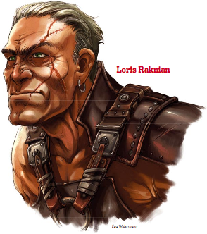

Week 19 - How to win friends and influence people, and the party takes a flutter.
A shorter session this week, getting a fair bit of roleplaying out of the way (which perhaps gives you some idea of our style of play). Andrew - the Beguiler's alter-ego - was not present, and so the social interaction simply came down to dice rolls. Which is good for me, as I am no actor.
We have rewound time a bit, back to Eligos' debriefing session with the party. This is my fault, as I did not read this next module before running the end of the last one. Turns out quite a bit more happened at that dinner than we thought last session.
Eligos delivers a mini lecture, covering the following points:
-
All of these clues point to the involvement of an ancient Sarlonian wizard called Kyuss. According to the stories, Kyuss was bound and trapped forever along with his patron, Katashka. That his doom might not be a thorough as previously thought is cause for great alarm.KyussIn Eberron, Kyuss is a wizard born in Sarlona over two thousand years ago, who was driven to Khorvaire by those who feared his dark magics. He established a city in the region now known as Q’barra, where he continued his study of necromancy. But Kyuss was not content with mortal magic. He learned of an ancient power of undeath: Katashka the Gatekeeper, one of the overlords of the Age of Demons. Kyuss pledged himself to Katashka and learned his terrible secrets, including the creation of worm-infested spawn. Ultimately Kyuss sought to become a physical vessel for Katashka’s power, and he sacrificed his city of followers to accomplish this task. But somewhere along the way he had miscalculated, by joining his soul to the spirit of Katashka, he bound himself into the demon’s prison. Kyuss had doomed himself for eternity.
- The worm-infested undead are the most notorious (and the least dangerous) of Kyuss’ spawn. Their presence in the region, combined with the discovery of the various worms, indicates that the cult of Kyuss is certainly becoming more active in the area. Spawn of Kyuss are especially dangerous in that they are horrifically fecund.
- The cult of Kyuss has traditionally been small, often consisting of single priests who live double lives as upstanding citizens. Recent evidence suggests that the Ebon Triad may have involved the smaller (but older) cult of Kyuss in its schemes. Eligos suspects some dark purpose behind this sinister alliance, possibly related to the coming Age of Worms.
- Tales of the Age of Worms itself are as old as anything. Often known by other names (the End Times, The Dark Age, and the Eternal Ruin among others), the Age of Worms is an ancient set of prophecies that speak of a transformation of the world, of a time when life gives way to something else. These prophecies are recorded in certain rare texts like the Book of Vile Darkness, Libris Mortis, the Necronomicon, and the Apostolic Scrolls, and are inscribed on the walls of ancient ruins across the world. Many cults and soothsayers have developed their own theories about the Age of Worms, but Eligos has never seen so many references to it from so many different sources as the information the PCs provide him. Something is certainly building.
At the mention of the Apostolic Scrolls, the party
completely drop the ball. Massive clue linking the Age of Worms to the Apostolic Scrolls and thereby to the last two or three months of DnD, but no - they're waaay too busy discussing PrCs to be listening to plot exposition. Eventually they get the idea. Yes, choo-choo and all aboard and all that.
the party perk up and relate their recent adventures and the involvement of Loris Raknian.Well. Eligos is very concerned that a) anything as horribly evil and dangerous as the Apostolic Scrolls should be in town and b) that a prominient citizen such as Loris Raknian would have anything to do with them. The Apostolic Scrolls are reputed to have been written by Kyuss himself, and among other things detail the creation of the ulgurstatsa - massive undead that consume the living and regurgitate them as undead. The scrolls are said to contain rituals that allow an ulgurstatsa to create even more powerful undead.
Raknian is simply untouchable at this juncture. A prominent, powerful and well-liked citizen of Sharn. His note to Zyrxog is simply not enough evidence to damn him. The party will need to investigate, and the best way to do that is probably to get into the Champion's Games. Trickier than it sounds.
The Champion's Games is a ten-day competition, featuring a variety of athletic events - chariot and foot racing, various styles of combat and wrestling, archery and the like, and full gladiatorial combat - team and individual, against monsters and against other gladiators. It is as part of this last style of event that a group of unknowns can walk in off the street and compete. Well: more or less. You do need to have a licensed manager, and licenses are difficult (and expensive) to come by. Luckily, Eligos has a friend. Her name is Celeste.
Celeste meets the party at The Crooked House, and brings with her an acquaintance, one Ekaym Smallcask - some sort of bard. Ekaym is a manager looking for a team, and the party are a team looking for a manager. The usual split of the winnings is 50/50, but flash manages to beat Ekaym down to 30%. Celeste leaves.
Celeste is an NPC from the Shackled City. At this stage, she plays no further part as far as the party knows.
Ekaym explains the rules of the competition.
Gladiators that can fly or levitate may do so up to a height of 40 feet. A gladiator that flies any higher is disqualified. Burrowing into the arena's floor is forbidden.
A match persists until one team is victorious, either through the death or the surrender of all opposing teams.
Winning gladiators have no right to the spoils of the fallen. A defeated gladiator keeps his gear, or in the case of death, ownership of gear reverts to his team or manager.
Any tactic that endangers spectators is grounds for immediate disqualification and possible legal action.
A disqualified gladiator must cease fighting at once and must move to the edge of the field of battle immediately. Failure to comply results in the disqualification of the entire team. Once a gladiator is disqualified, he may no longer take part in any remaining battles.
Awards are given after each battle.
The gladiatorial games consist of a massive four-round elimination event spaced over the ten days of the games. A single team can consist of no more than eight members. Familiars do not count as members, but larger animal companions, mounts, and cohorts do. Each team of gladiators must identify itself with a name and designate a leader.
The tournament is fought in
four successive rounds of
elimination.
The first
round consists of six
battles of free-for-all combat between
groups of four
teams.
In the second round, the six
winners of the first
round of battles
are paired off into
three team-versus-team battles.
In the third round, two of the three
remaining teams fight each other, while the
third team fights a special exhibition match
against an exotic monster. Traditionally, this exhibition match is fought by the current holder of the Champion’s Belt (if they have made it through to round three).
The fourth and
final round is a face-to-face battle between
the two remaining teams.
The winner of each round is awarded a generous prize to be shared among the team members and their manager.
The first day of the Champion’s Games begins with the Free Dinner, a sumptuous outdoor banquet held on the battleground of the arena itself at sundown. The Free Dinner involves hundreds of people and is open to Loris Raknian and his retinue, the licensed managers, the gladiators, and the most affluent among the Free City's nobility. Wagers are placed as the nobles have the opportunity to meet the gladiators and evaluate their might and commeasure the first bets.
After the Free Dinner, the gladiators are escorted to a huge chamber below the arena. This is the Coenoby (pronounced see-no-bie), and it is home for the gladiators until their elimination from the competition or the end of the Games. During the time the gladiators are confined to the Coenoby, they are allowed meetings with their managers every other day. Any team not responding to a fight's roll call or found guilty of violating any rules of the tournament is immediately disqualified and expelled from the Coenoby by Raknian's elite guards.
The party agree and sign the forms. In honour of the town of Diamond Lake where they met and began adventuring, they name themselves "Rough Diamond", and Flash unanimously appoints himself team leader. They are now gladiators, participants in the Champion's Games of Sharn. Whoopee! Ekaym meet the party at sign-up day, in a week or so.
 But first, Raknian. The party locate him without difficulty - he is sitting at the head table. Frith determines that he does indeed register their presence, but for now the gloves are still on. He makes no move, and neither does the party. Instead, the party look for a bookie. Gambling on yourself is positively encouraged, and in no time each party member manages to place 250gp at 3:1 odds. Flash looks for a bookie that will handle more, but has no luck. Their manager, Ekaym, is a little distracted and not really on the job - he seems to be watching Raknian, too. A Detect Thoughts spell indicates that he suspects Raknian of doing him a grave and personal wrong. There is a woman's name, but Flash can get no more at this time.
There are some familiar faces at the free dinner. In particular, the current holder of the Champion's Belt is none other than Auric, leader of that band of adventurers who first set the party on the path of graverobbing for loot. Khellek is with him, but where is Tiarra? A question soon answered, as the lady herself approaches them. She believes that the party might very well defeat Auric, Khellek, and The Leatherworks - their flesh golems - and offers a deal. If the party will promise to show mercy should they be victorious, she will act as agent for a hefty wager of 2,500 gold. As to why she herself is not competing, she replies: "brawling with gladiators is bad for business".
And that's about it for the free dinner. The gladiators are lowered to the under-arena level, and from there descend a long winding staircase into the foundations of the towers of Dura, to a great chamber called 'The Coenoby' which shall be their home for the next ten days, or until they are defeated or disqualified.
The roster for the first six battles is drawn and posted, and the intrigue begins. The three teams that Rough Diamond face in the first round are:
Arcane Auriga led by Rennida Auriga. This group of four elven archers are all female. Apart from that, and the fact that their team name mentions the word "arcane", nothing is obvious save that they are not looking for company.
Badlands Revenge, a group of three gnolls lead by some sort of human druid (the animal companion is a dead giveaway). These appear savage and unfriendly.
Sapphire Squad, who are tending their mounts, consist of two humans lead by a rarity - a regal looking humanoid named Korush who is plainly some sort of extraplanar visitor, although exactly what is not obvious. he seems charming an good-tempered.
Flash, the sly dog, goes for the elven chicks first. They are unfriendly, but Flash soon charms them. Not enough, however, that they agree to help. Pity.
Next Flash approaches Korush. He and Flash soon become best mates, and they agree to finish off the other two teams first. Furthermore, he offers to demonstrate to the party his unique fighting style.
Prerequisite: Weapon Finesse, Weapon Focus (any one-handed slashing weapon), base attack bonus +1
Benefit: If you do not wield a shield or weapon in your off-hand, you treat your chosen weapon as a light weapon.
If you do not wield a shield or weapon in your off-hand, you also gain a +1 shield bonus to your AC while wielding your chosen weapon. When you are Þghting defensively or using the total defense action, this shield bonus increases to +2.
Special: A fighter may select Graceful Edge as one of his Þghter bonus feats.
You may take this feat more than once - each time you do, it applies to a new one-handed slashing weapon you have Weapon Focus in.
Any party member who wishes may take "Graceful Edge" as a feat.
For his approach to Badlands Revenge, Flash opts to do a quick change. While he does so, Tom swings into action.
Tom approaches the group, but they start out hostile, and Tom does not improve matters. Words are exchanged, including "half-pinkboy bastard" and "Look at you! You're not even a proper monster!". The marshals manage to persuade Tom and the gnolls to "save it for the arena" by threatening them with disqualification and expulsion, but at the end there are definite "Your ass is mine!" looks being shot between the two.
Flash then approaches the gnolls disguised as something, but does not attempt to win them over. Instead, he uses the opportunity to study them. He then approaches Arcane Auriga and does a faultess imitation if a rude and hostile gnoll. Come tomorrow morning, that's who they will target first.
And so, to bed. Tomorrow is a big day.
And that's how it stands. Come game night, we will essentially set up the board and start straight on melee. Should be a long and complicated battle.
Cheers all! See you there.